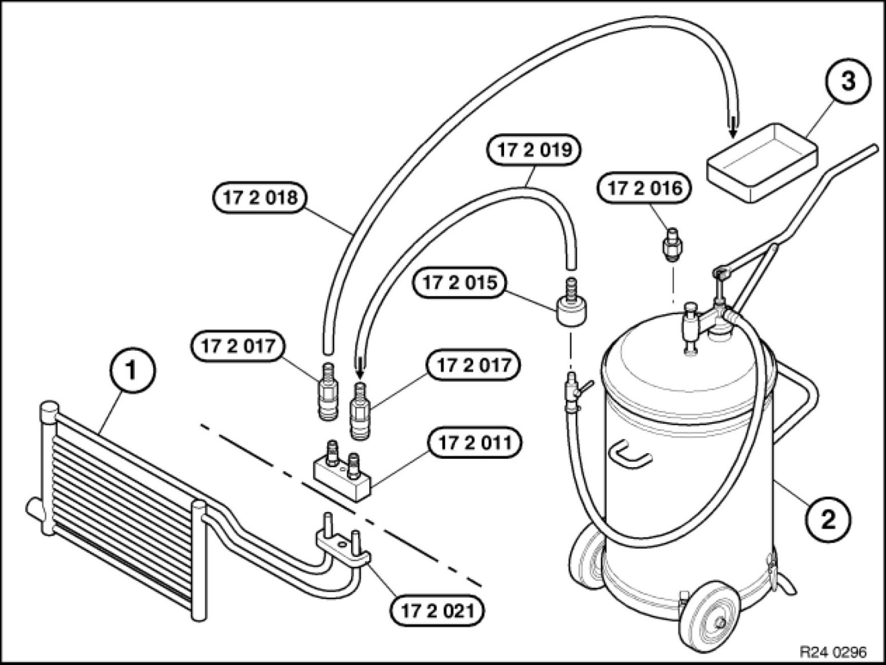
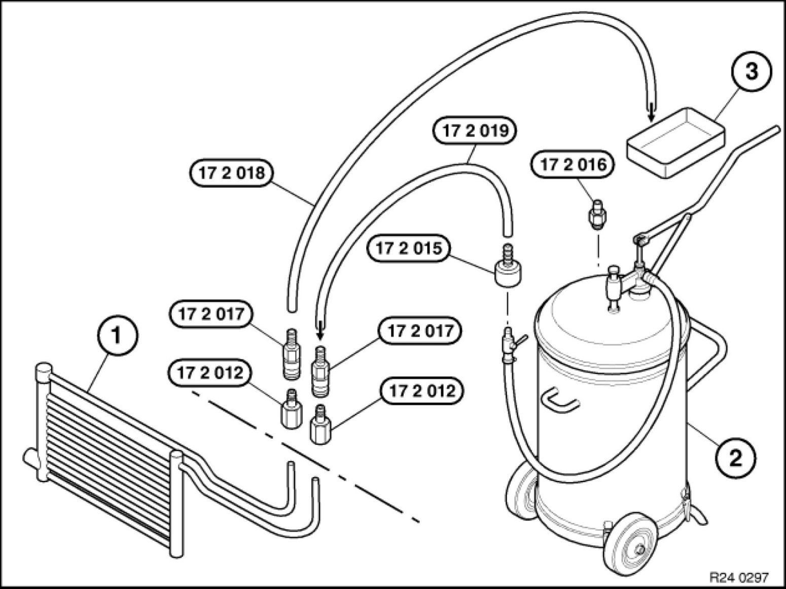
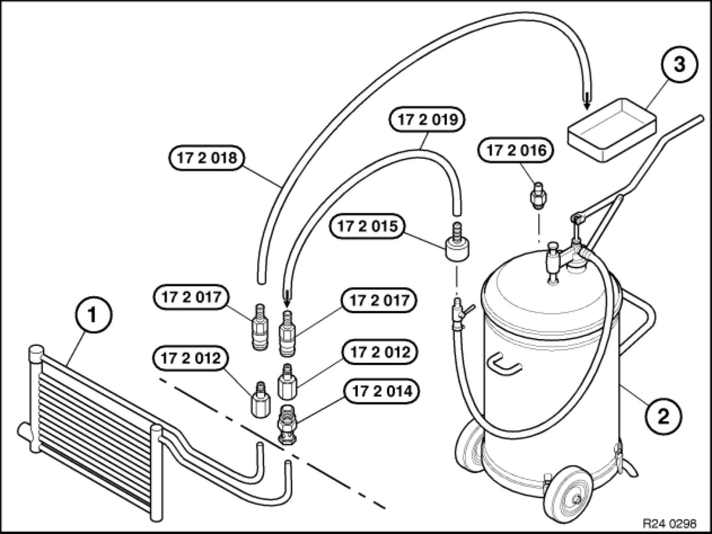
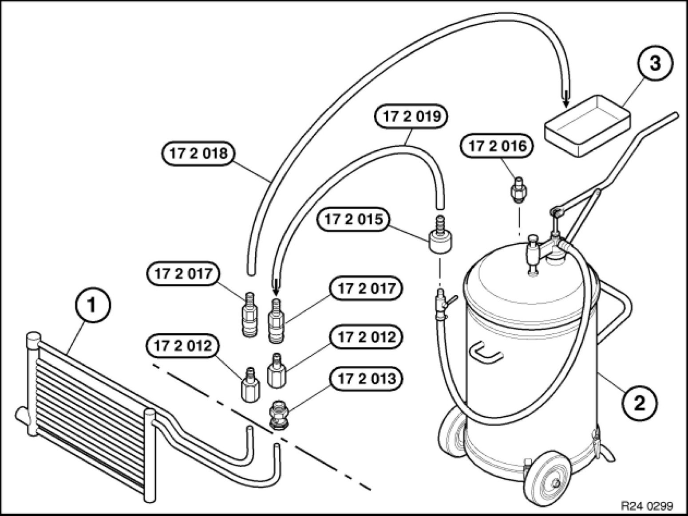

Procedures
17 21 500 - Flushing transmission oil cooler with lines (automatic transmission)

Special tools required:
- 17 2 018 17 2 010 Set of Adapters
- 17 2 019 17 2 010 Set of Adapters

Note:
Carry out the work steps listed when:
Installing a new or replacement transmission.
Flushing can only be carried out with the automatic transmission removed.
Procedure:
Automatic transmission removed.
Connect appropriate adapters (see description below) to oil lines exiting from automatic transmission.
Connect connecting line 17 2 019 17 2 010 Set of Adapters from the oil collection unit with the quick-release coupling.
Connect drain line 17 2 018 17 2 010 Set of Adapters using quick-release coupling.
Hold and direct open end of drain line into a suitable drip tray.
Using oil collection unit, flush approx. 1 litre of transmission fluid (refer to BMW Service Operating Fluids) through oil lines and transmission oil cooler.
Reposition quick-release couplings.
Flush oil lines/transmission oil cooler in opposite direction with approx. 1 litre of transmission fluid (refer to BMW Service Operating Fluids).
Disconnect quick-release couplings.
Remove adapter.
Note:
Dispose of flushing oil correctly.
Do not reuse under any circumstances.
Arrangement, flushing apparatus for transmissions A5S 310Z, A5S 560Z, A5S 360R/390R, A4S 200R, A5S 325Z

1) - Transmission oil cooler with lines
2) - Oil collection unit
3) - Oil drip tray
17 2 011 - Adapter for connecting transmission-side oil cooler lines (1)
17 2 015 - Connection for oil collection unit (2), manufacturer: Deutsche Tecalemit or
17 2 016 - Connection for oil collection unit (2), manufacturer: Horn
17 2 017 - Quick-release coupling (2 pieces)
17 2 018 - Hose to oil drip tray (3)
17 2 019 - Hose to oil collection unit (2)
17 2 021 - Mounting plate for adapter 17 2 011 for transmissions A5S 325Z, GA6HP26Z
Arrangement of flushing apparatus for transmission A4S 310R

1) - Transmission oil cooler with lines
2) - Oil collection unit
3) - Oil drip tray
17 2 012 - Adapters (2 x) for connecting transmission-side oil cooler lines (1)
17 2 015 - Connection for oil collection unit (2), manufacturer: Deutsche Tecalemit or
17 2 016 - Connection for oil collection unit (2), manufacturer: Horn
17 2 017 - Quick-release coupling (2 pieces)
17 2 018 - Hose to oil drip tray (3)
17 2 019 - Hose to oil collection unit (2)
Arrangement of flushing apparatus for transmission A4S 300J

1) - Transmission oil cooler with lines
2) - Oil collection unit
3) - Oil drip tray
17 2 012 - Adapters (2 x) for connecting transmission-side oil cooler lines (1)
17 2 014 - Banjo bolt for connecting transmission-side oil cooler lines (1)
17 2 015 - Connection for oil collection unit (2), manufacturer: Deutsche Tecalemit or
17 2 016 - Connection for oil collection unit (2), manufacturer: Horn
17 2 017 - Quick-release coupling (2 pieces)
17 2 018 - Hose to oil drip tray (3)
17 2 019 - Hose to oil collection unit (2)
Arrangement of flushing apparatus for transmission A5S 440Z

1) - Transmission oil cooler with lines
2) - Oil collection unit
3) - Oil drip tray
17 2 012 - Adapters (2 x) for connecting transmission-side oil cooler lines (1)
17 2 013 - Banjo bolt for connecting transmission-side oil cooler lines (1)
17 2 015 - Connection for oil collection unit (2), manufacturer: Deutsche Tecalemit or
17 2 016 - Connection for oil collection unit (2), manufacturer: Horn
17 2 017 - Quick-release coupling (2 pieces)
17 2 018 - Hose to oil drip tray (3)
17 2 019 - Hose to oil collection unit (2)